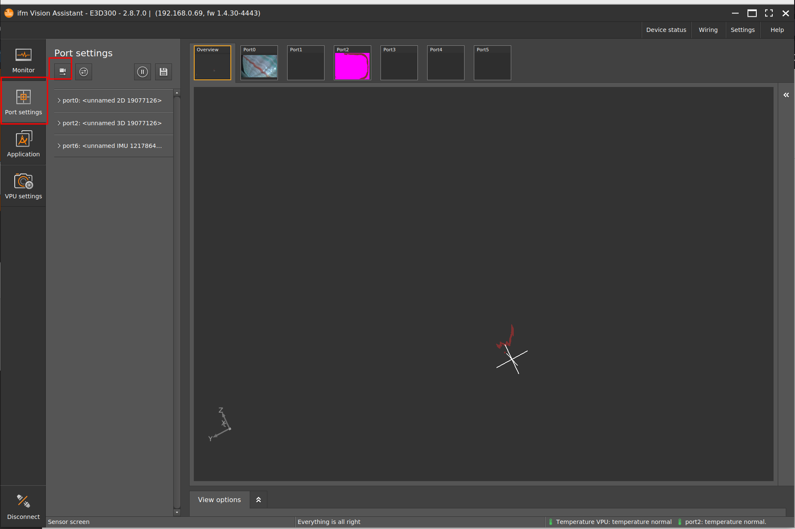
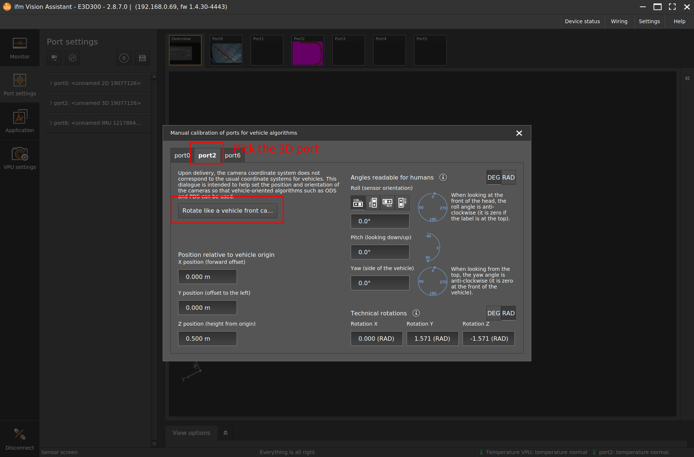
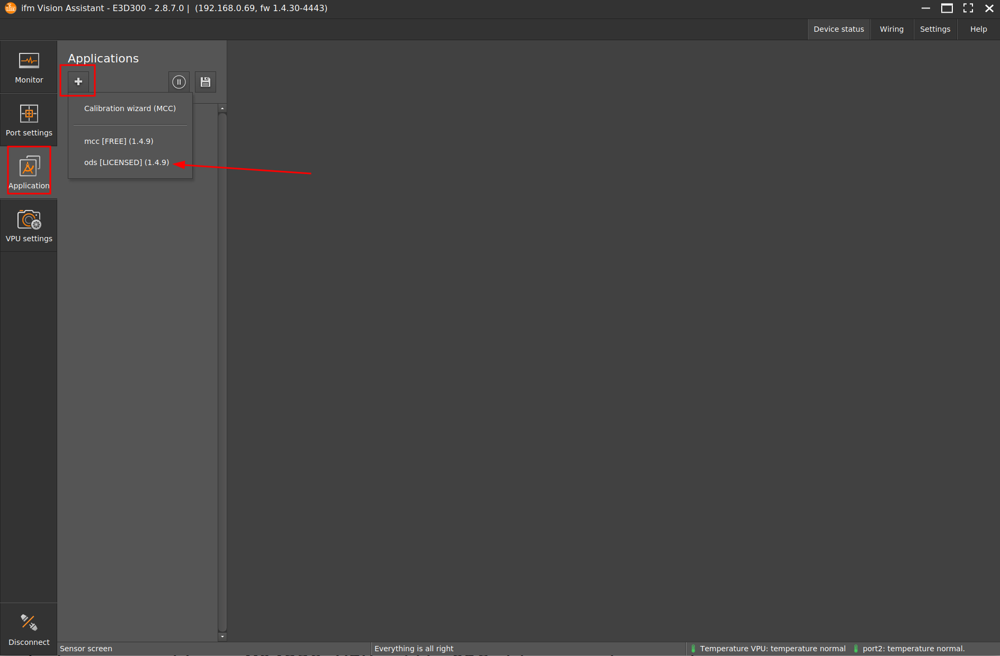
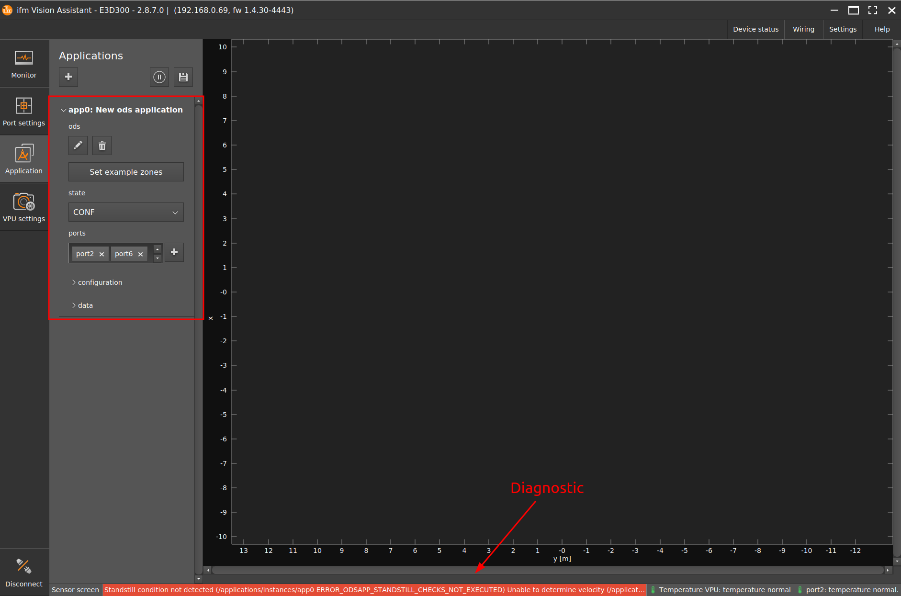
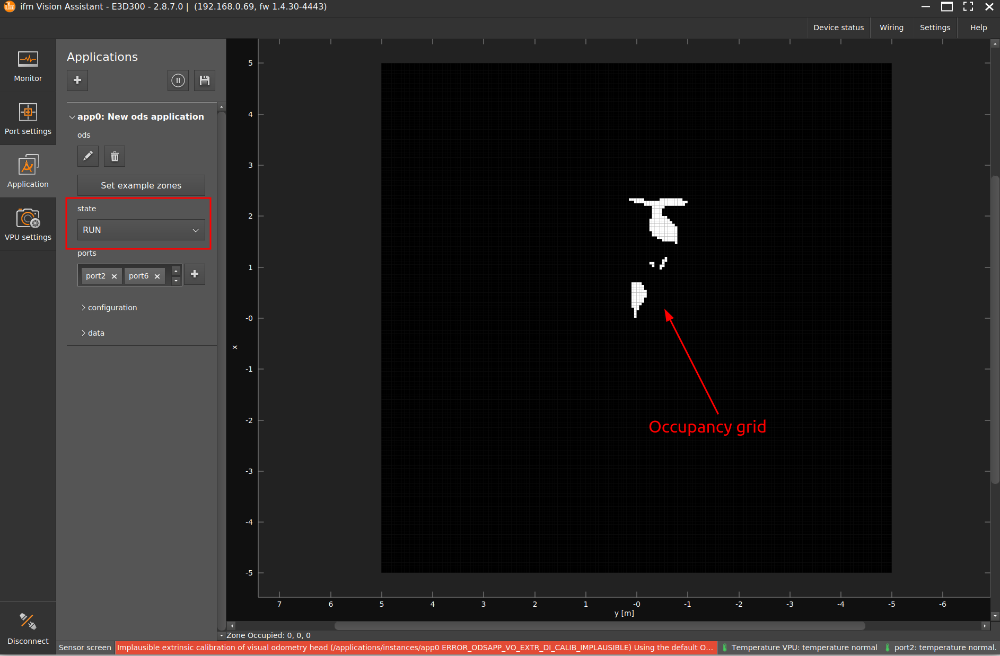
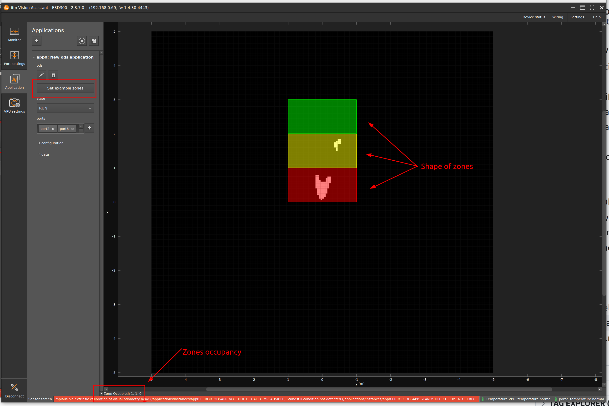
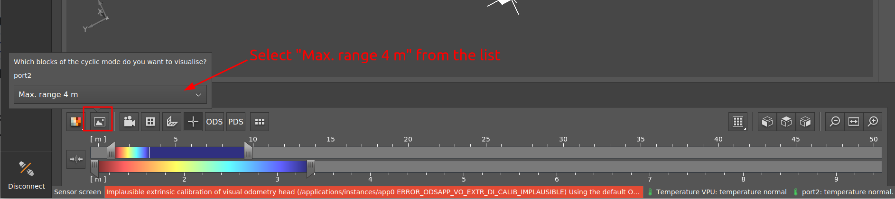

Getting started with ODS
This document briefly outlines the main steps for getting started with the ifm ODS solution on the O3R perception platform.
Prerequisites
An OVP801 or OVP811 device (this comes with the required ODS app pre-installed),
One or more cameras, O3R222 or O3R225,
An Ethernet cable, FAKRA cable and power supply as specified in the wiring instructions,
The ifm Vision Assistant, which is the standard GUI from ifm used to interface with all 3D cameras (download the latest version on ifm.com),
Step 0: Setup
First, make sure to properly wire the O3R perception platform. You can follow the wiring instructions.
Once the OVP8xx and cameras are wired, open up the ifm Vision Assistant and make sure you can connect to the O3R platform and are able to receive data.
Step 1: Extrinsic calibration
Use the calibration wizard in the ifm Vision Assistant to calibrate each camera.


The calibration steps shown assume that the camera is positioned horizontally, facing forward, at a height of 50 cm from the floor. If your setup is different, adjust the rotation and translation values.
Step 2: Create an ODS application
In the “Application” tab, create an ODS application instance. 
An application instance is created with default settings. By default, all connected 3D ports are added to the list of ports for the ODS app to use. 
Note
When first instantiating the application, diagnostic messages may appear at the bottom of the screen. The ODS application performs some checks related to the motion of the vehicle, which may take some time to succeed while the application is running. Typically, these will disappear after the ODS has been able to initialize properly.
Step 3: Start ODS
To start ODS, you can simply set the state parameter to "RUN":

Once the application is running, objects identified as obstacles will appear in the occupancy grid.
You can also activate the default zones, by clicking on the “Set Example Zones” button: 
Watch the video:

Note
If you notice that the point cloud appears to flicker in the visualization, you can use the frame filter. The frame filter does not change the parameters of any port and is used for visualization purposes only.
